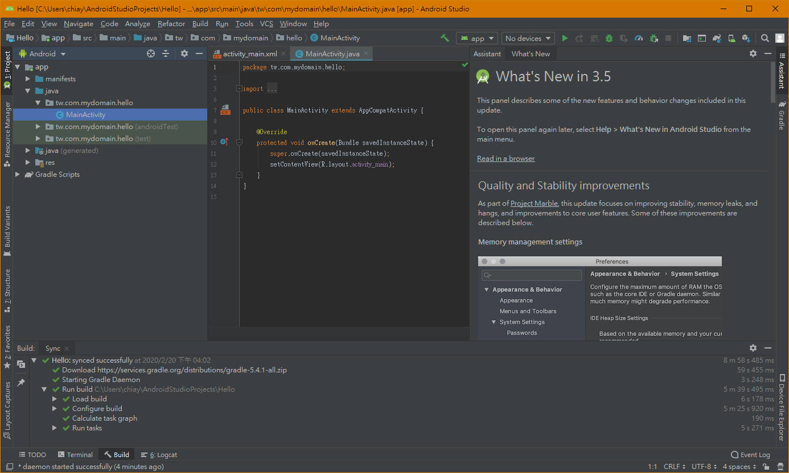

作為一個新手，擁有一個任性的權利；那就是可以盲目地跟從步驟，只要有 run 出東西來就可以。
上一篇文章說到安裝 Android Studio ，接下來就可以開啟第一個專案了。
以下就來說說怎麼開啟新專案，並在模擬器和實體裝置上執行。
新建專案
如果是第一次執行 Android Studio ，應該會看到以下畫面；要開啟新專案就選擇 Start a new Android Studio project 。
接下來可以選擇專案類型，有好幾種範本可以選擇，暫時先看圖說故事就可以了。
因為還沒有要做什麼，我選擇 Empty Activity 。
接著設定專案基本資訊。
- Name
- 專案名稱
- 盡量取可讀性高，又不重複的名稱。
- Package name
- 通常是倒過來的網域名稱加上專案名稱。
- 凡是 Java 專案都會有 Package name ，只能使用英數字及底線，通常使用小寫。
- Save location
- 儲存位置
- Minimal API level
- 最低可以適用的 Android 版本
- 選擇之後，下面會顯示有多少比例的裝置使用這個版本；100% 就不用擔心有裝置會不能使用你的程式。
- The project will support instant apps
- 專案有要支援 instant app 才選。
設定好後就可以進入專案，第一次使用會下載一些東西，所以會比較久。
專案建置完成看起來會是這個樣子。

模擬器 (Virtual Device)
什麼是模擬器
不論是使用什麼作業系統來開發 Android ，都需要將寫好的專案打包到 Android 裝置上執行。
當我們手邊沒有 Android 的裝置時，就可以利用模擬器來執行程式。
新增模擬器
安裝 Android Studio 時，就已經預設安裝模擬器了（除非手動取消選項）。
首先點選「Tools > AVD Manager」。
選擇「Create Virtual Device」。
再來選擇裝置規格；可以選擇預設的裝置、匯入或自訂裝置。
一個有匯入檔案的 GitHub 專案： mwolfson / AndroidAVDRepo

選擇模擬器的 Android 版本（安裝需要一點時間）。
最後設定一些細節。
例如畫面要直的還是橫的、用什麼方式模擬、使用多少記憶體……等。
設定完成。
使用模擬器
選擇模擬器後，按下右邊的綠色箭頭執行。
模擬器的介面會跟裝置很接近，大部分的操作就跟裝置一樣；右邊的工具列可以開關機、調整音量及傾斜裝置等。
第一次使用畫面會是黑色的，它不是壞了，只是要按開機。
就和一般 Android 的操作方式一樣，在應用程式的地方可以找到專案的名稱，點進去就會開啟專案的程式了。
實體裝置
使用模擬器會佔據電腦的資源，而且有時候還是沒有比實體裝置來得真實。
手邊如果有想測試的裝置，直接在上面執行程式還是最方便的了。
想使用實體裝置來測試專案程式的話，需要做一些前置工作。
啟用 Google USB Driver
首先要啟用 Google USB Driver ；點選「Tools > SDK Manager 」。
在 SDK Tools 的頁面勾選 Google USB Driver 。
如果之前沒有安裝過會詢問要不要安裝。
開啟開發人員模式
接著要開啟裝置的開發人員模式。
進入裝置的設定，點選「系統」。
接著點選「關於手機」。
點選「軟體資訊」。
接著在「版本號碼」的地方點擊七下，開啟開發人員模式。
啟用 USB 偵錯
開啟開發人員模式以後回到「系統」，會發現多了一個「開發人員選項」。
點進去以後啟用「 USB 偵錯」。
執行
完成以上步驟之後，只要將裝置接上電腦，就會出現確認訊息。
點選「允許」。
在 Android Studio 上就可以看到新的選項，選擇自己的裝置。
按下綠色箭頭以後，裝置就會直接啟動專案程式。
下集預告
下一篇文章預定藉由製作一個小程式（也許是 BMI 計算機），初步了解 Android 圖形介面與程式邏輯的互動關係。